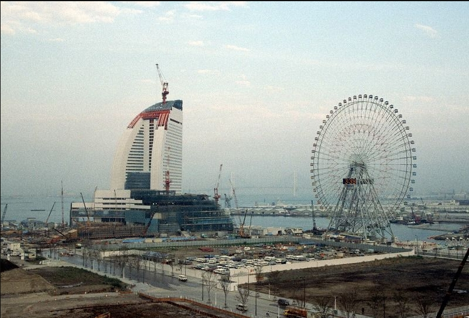

インタビュー
１．1989年現在のコスモワールドにある観覧車が建設されたが当時はどのような印象や雰囲気があったか

引用
２．学生時代横浜で遊ぶときどこで遊ぶのが定番だったのか
引用
３．横浜博覧会の印象
引用
４．みなとみらいといえばデートスッポトとしても知られるが当時のデートスッポトとしてはどこが人気だったか
引用
５．1976年上永谷・横浜の市営地下鉄が開通したが、それに乗ってどこかに出かけたか
引用